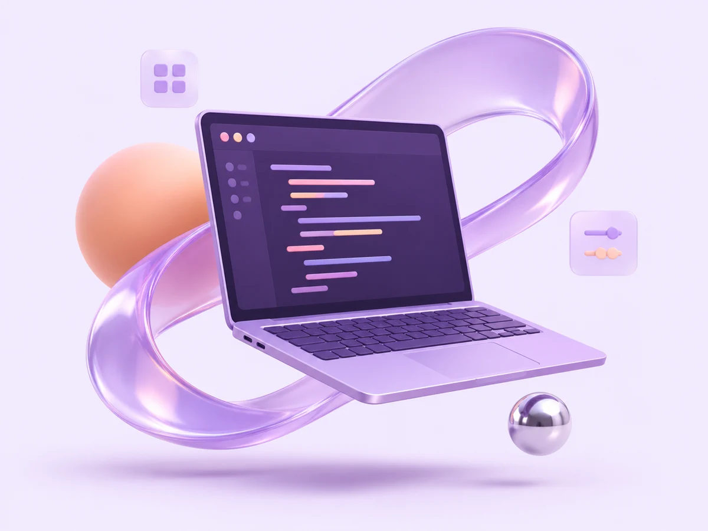

التفكير مثل المبرمجين
فهم الخوارزميات وهياكل البيانات ومبادئ البرمجة، والتدرّب على تقسيم المشكلات إلى خطوات واضحة.
أساسيات علوم الحاسوبمطوّرة برمجيات، بعقلٍ منطقي وعينٍ إبداعية.
أكتب الشيفرة لأصنع شيئًا مفيدًا وجميلًا. أهتم ببناء مواقع وتطبيقات سهلة الاستخدام، وأؤمن أن التفاصيل الصغيرة تصنع تجربة مختلفة.

فكرة. شيفرة. أثر.هنا تبدأ الحكاية < / >أنا هبة خالد الزين، مطوّرة برمجيات أجد متعتي في تحويل الأسئلة المعقّدة إلى حلول بسيطة.
بدأت رحلتي بفضول: كيف تتحوّل فكرة صغيرة إلى تطبيق نستخدمه كل يوم؟ ومنذ ذلك الوقت، أصبحت البرمجة طريقتي في الاستكشاف والبناء. أركّز على تطوير الويب، وأجمع بين التفكير التحليلي والاهتمام بتجربة المستخدم.
أحب أن أفهم المشكلة أولًا، ثم أصمّم حلًا واضحًا وأطوّره خطوة بخطوة. وفي كل مشروع، أترك مساحة للتعلّم والتجربة والتحسين.
// A little about the developer
const developer = {
name: "Hiba Khaled Al-Zein",
role: "Software Developer",
mindset: "Always learning",
loves: [
"Clean code",
"Thoughtful design",
"Good coffee"
],
nextIdea: yours
};مختارات من مشاريع تطبيقية تجمع الفكرة والتصميم والبرمجة.
مشاريع تصوّرية للعرض الجامعي، مع صور مولّدة بالذكاء الاصطناعي.
أختار الأداة التي تخدم الفكرة، وأتعلّم ما يجعلها أفضل.
واجهات حيّة تتكيّف مع كل شاشة
أساس متين لحلول يمكن تطويرها
تجربة واضحة، من التخطيط إلى الاختبار
رحلة تعلّم تبدأ بالأساسيات، وتنمو مع كل فكرة تتحوّل إلى مشروع.
فهم الخوارزميات وهياكل البيانات ومبادئ البرمجة، والتدرّب على تقسيم المشكلات إلى خطوات واضحة.
أساسيات علوم الحاسوببناء واجهات متجاوبة وإضافة التفاعل وإدارة البيانات، مع الاهتمام بإمكانية الوصول وتجربة الاستخدام.
مشاريع جامعية وتعلّم ذاتيأسعى إلى فرصة تدريب أتعلم خلالها من فريق، وأساهم في تطوير منتجات تعالج مشكلات حقيقية.
جاهزة للتعلّم والمشاركةفرصة تدريب، مشروع جامعي، أو حتى حديث عن فكرة جديدة… يسعدني أن أسمع منك.
بريد توضيحي — استبدله ببريدك الشخصي